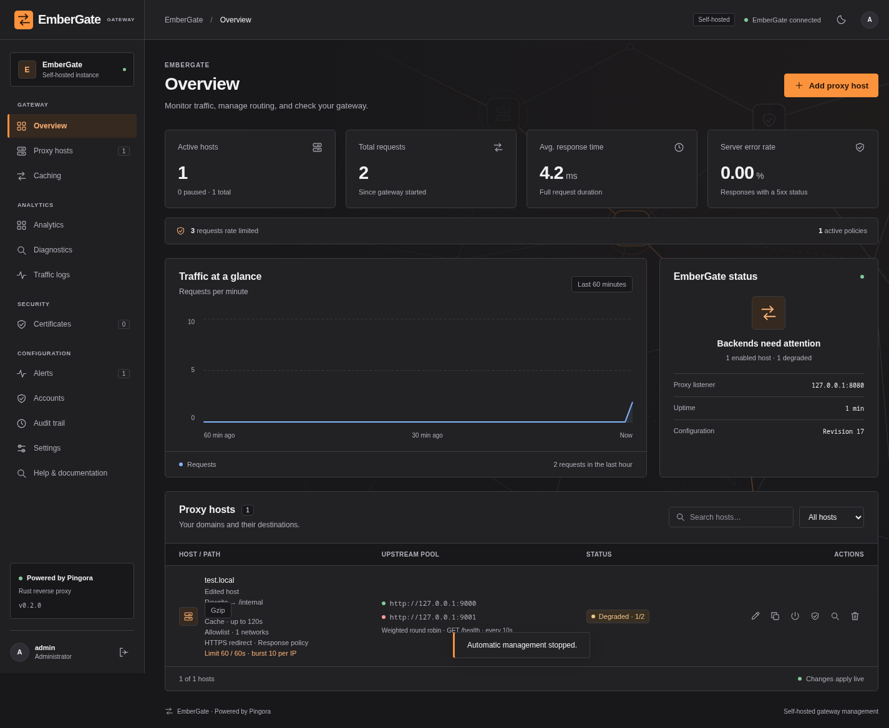

Route with confidence
Hostname and path routing, weighted upstream pools, health checks, graceful draining, and safe retries. Apply changes live from the dashboard.
Routing & load balancing ↗A reverse proxy that feels as good to manage as it is powerful to run. Route applications, automate HTTPS, and understand your traffic—all from EmberGate.
Bring host management, traffic insights, certificates, and operational controls into one consistent interface.

Dashboard preview using isolated demonstration data.
Hostname and path routing, weighted upstream pools, health checks, graceful draining, and safe retries. Apply changes live from the dashboard.
Routing & load balancing ↗Issue and renew Let’s Encrypt certificates through Cloudflare DNS challenges. Manage uploaded certificates and wildcard hosts in the same place.
Certificates & automatic renewal ↗Opt-in response caching and Brotli/gzip compression, rate limits, IP policies, request rewrites, maintenance pages, and security headers.
Traffic policies ↗Persistent traffic analytics, request logs, on-demand backend diagnostics, Prometheus metrics, and Discord or webhook notifications.
Monitoring & diagnostics ↗Local accounts and two-factor authentication protect management access. Configuration history helps you review changes. Encrypted backups and scheduled offsite copies give you a path back.
Read the backup guide →Clone with submodules, start EmberGate, and use the one-time setup code to create your administrator account.
Read the installation guide →Linux and a stable Rust toolchain required. Docker Compose is also included.git clone --recurse-submodules \
https://github.com/karlocizma/EmberGate.git
cd EmberGate/gateway
cargo run --lockedThe same guides available inside your gateway.
Loading guides…